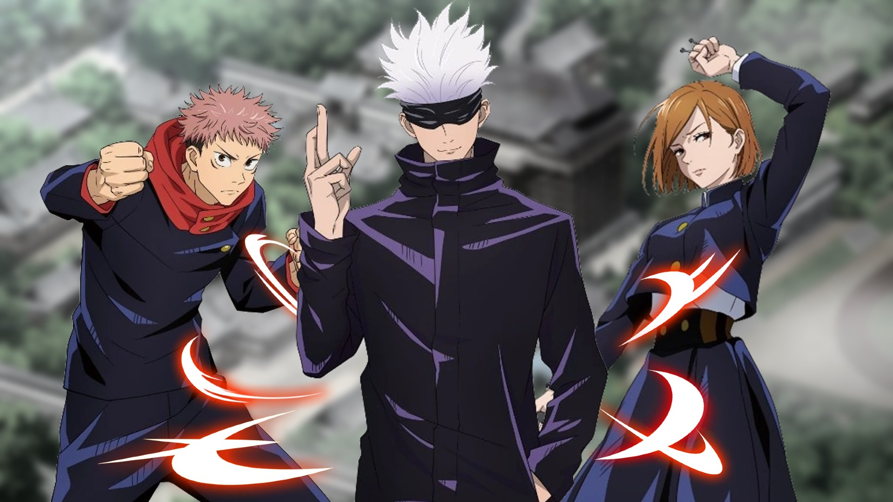
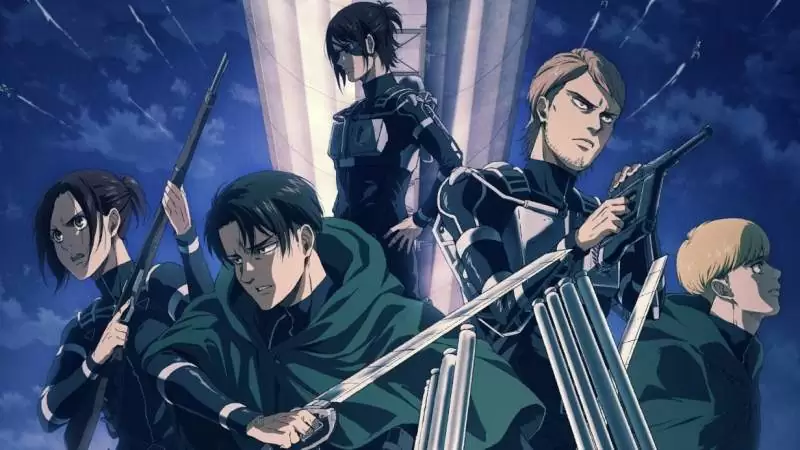
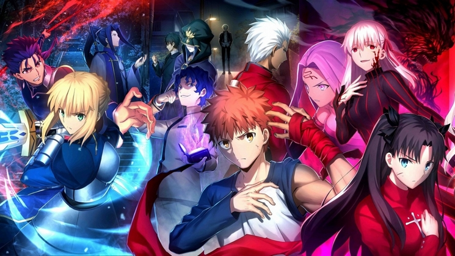
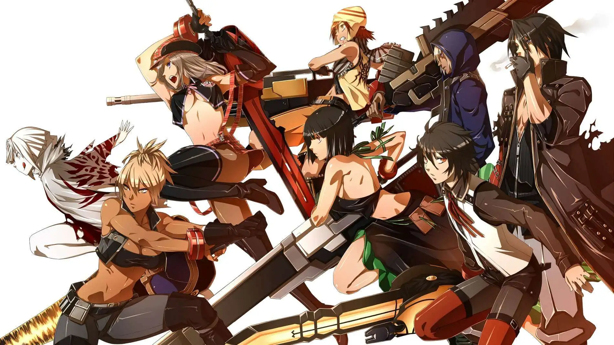

Estudios
Ghibli
Studio Ghibli é um renomado estúdio de animação japonês, conhecido por criar filmes de qualidade visual deslumbrante e narrativas profundas. Alguns de seus principais animes incluem "A Viagem de Chihiro", uma aventura mágica sobre crescimento pessoal; "Meu Amigo Totoro", uma história encantadora sobre a amizade entre duas irmãs e criaturas místicas; "O Castelo Animado", uma cativante jornada de uma jovem que é transformada em uma velha e entra em um castelo mágico. Cada filme da Ghibli é uma obra-prima única, combinando animação artística com temas universais e personagens memoráveis.
Mappa
A Mappa é um estúdio de animação japonês conhecido por produzir obras de alta qualidade. Entre suas criações notáveis, destacam-se "Dorohedoro", um anime sombrio que combina fantasia e cyberpunk, "Jujutsu Kaisen", um anime de ação sobrenatural baseado em um popular mangá, e "Attack on Titan", uma aclamada série de anime que retrata a luta da humanidade contra gigantes devoradores de humanos. Com animações envolventes e visualmente impactantes, a Mappa solidificou sua reputação como um dos estúdios mais respeitados no cenário da animação japonesa.


- 
- 
Wit
A Wit Studio é conhecida por suas produções de alta qualidade, como "Vinland Saga", um anime épico que retrata a era dos vikings com cenas de ação deslumbrantes. Outro destaque é "Great Pretender", um anime cativante que combina crime e comédia em uma trama envolvente. Além disso, "Owari no Seraph" é um anime emocionante que apresenta uma história de sobrevivência em um mundo pós-apocalíptico dominado por vampiros. Com sua animação impecável, a Wit Studio solidificou seu lugar entre os estúdios mais respeitados do Japão.
Ufotable
Destacam-se entre suas obras notáveis o anime "Demon Slayer: Kimetsu no Yaiba", que combina ação e sobrenatural em uma emocionante jornada de um jovem caçador de demônios, "Fate/stay night: Unlimited Blade Works", que traz batalhas épicas em um universo de magia e lendas, e "God Eater", uma série baseada no jogo de mesmo nome, que retrata uma batalha desesperada contra criaturas chamadas Aragami. Com sua animação impressionante e visualmente deslumbrante, a Ufotable solidificou seu lugar como um dos estúdios mais respeitados na indústria da animação japonesa.


- 
- 
Kyoto Animation
A Kyoto Animation é um prestigiado estúdio de animação altamente conhecido. Entre suas produções notáveis, destacam-se o anime "K-On!", que retrata as aventuras musicais de um grupo de garotas colegiais, "Violet Evergarden", uma emocionante história sobre uma ex-soldado em busca de significado na vida pós-guerra, e "Clannad", um anime tocante que aborda temas de amizade e amor em um ambiente escolar. Com sua animação meticulosa e narrativas profundas, a Kyoto Animation solidificou sua reputação como um dos estúdios mais respeitados e adorados na indústria da animação japonesa.